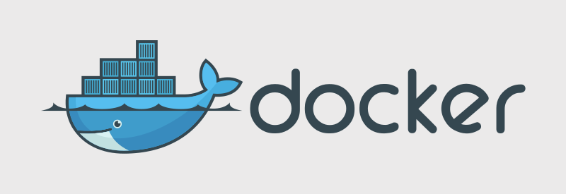
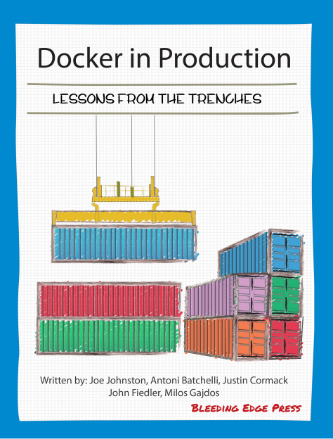
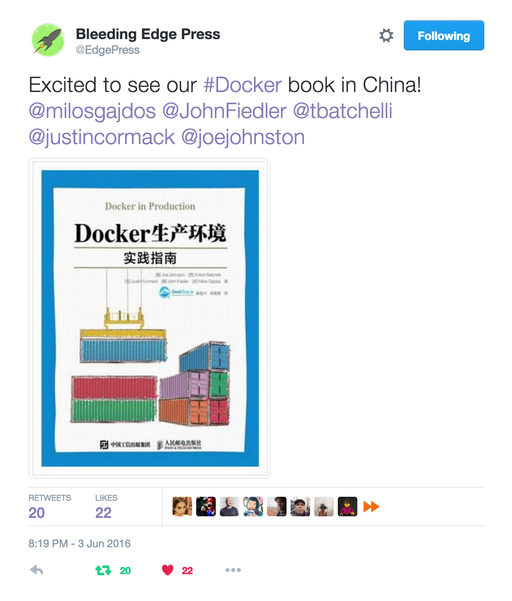

Justin Cormack
Cambridge, UK based engineer at Docker @justincormack

Co-author of Docker in the Trenches: Successful Production Deployment


justin 43426 /Applications/Docker.app/Contents/MacOS/com.docker.hyperkit -A -m 2G -c 4 -u -s 0:0,hostbridge -s 31,lpc -s 2:0,virtio-vpnkit,uuid=948ddfd0-5162-4f25-a5aa-7ccd8457a255,path=/Users/justin/Library/Containers/com.docker.docker/Data/s50,macfile=/Users/justin/Library/Containers/com.docker.docker/Data/com.docker.driver.amd64-linux/mac.0 -s 3,virtio-blk,file:///Users/justin/Library/Containers/com.docker.docker/Data/com.docker.driver.amd64-linux/Docker.qcow2,format=qcow -s 4,virtio-9p,path=/Users/justin/Library/Containers/com.docker.docker/Data/s40,tag=db -s 5,virtio-rnd -s 6,virtio-9p,path=/Users/justin/Library/Containers/com.docker.docker/Data/s51,tag=port -s 7,virtio-sock,guest_cid=3,path=/Users/justin/Library/Containers/com.docker.docker/Data,guest_forwards=2376;1525 -l com1,autopty=/Users/justin/Library/Containers/com.docker.docker/Data/com.docker.driver.amd64-linux/tty,log=/Users/justin/Library/Containers/com.docker.docker/Data/com.docker.driver.amd64-linux/console-ring -f kexec,/Applications/Docker.app/Contents/Resources/moby/vmlinuz64,/Applications/Docker.app/Contents/Resources/moby/initrd.img,earlyprintk=serial console=ttyS0 com.docker.driverDir="/Users/justin/Library/Containers/com.docker.docker/Data/com.docker.driver.amd64-linux", com.docker.database="com.docker.driver.amd64-linux" ntp=gateway -F /Users/justin/Library/Containers/com.docker.docker/Data/com.docker.driver.amd64-linux/hypervisor.pid
justin 42732 /Applications/Docker.app/Contents/MacOS/com.docker.osx.hyperkit.linux
justin 42728 com.docker.backend
justin 23338 com.docker.db --url=file:///Users/justin/Library/Containers/com.docker.docker/Data/s40 --git /Users/justin/Library/Containers/com.docker.docker/Data/database
justin 23337 /Applications/Docker.app/Contents/MacOS/com.docker.osx.hyperkit.linux -watchdog fd:0
justin 23334 /Applications/Docker.app/Contents/MacOS/com.docker.osx.hyperkit.linux -watchdog fd:0
root 3355 /Library/PrivilegedHelperTools/com.docker.vmnetd
justin 43684 /Applications/Docker.app/Contents/Resources/bin/com.docker.frontend {"action":"vmstateevent","args":{"vmstate":"running"}}
justin 43683 /Applications/Docker.app/Contents/Resources/bin/com.docker.frontend {"action":"vmstateevent","args":{"vmstate":"running"}}
justin 43425 /Applications/Docker.app/Contents/MacOS/com.docker.driver.amd64-linux -db /Users/justin/Library/Containers/com.docker.docker/Data/s40 -osxfs-volume /Users/justin/Library/Containers/com.docker.docker/Data/s30 -slirp /Users/justin/Library/Containers/com.docker.docker/Data/s50 -vmnet /var/tmp/com.docker.vmnetd.socket -port /Users/justin/Library/Containers/com.docker.docker/Data/s51 -vsock /Users/justin/Library/Containers/com.docker.docker/Data -docker /Users/justin/Library/Containers/com.docker.docker/Data/s60 -addr fd:3 -debug
justin 43424 com.docker.driver.amd64-linux -db /Users/justin/Library/Containers/com.docker.docker/Data/s40 -osxfs-volume /Users/justin/Library/Containers/com.docker.docker/Data/s30 -slirp /Users/justin/Library/Containers/com.docker.docker/Data/s50 -vmnet /var/tmp/com.docker.vmnetd.socket -port /Users/justin/Library/Containers/com.docker.docker/Data/s51 -vsock /Users/justin/Library/Containers/com.docker.docker/Data -docker /Users/justin/Library/Containers/com.docker.docker/Data/s60 -addr fd:3 -debug
justin 43423 com.docker.slirp --db /Users/justin/Library/Containers/com.docker.docker/Data/s40 --socket fd:3 --port-control fd:4 --vsock-path /Users/justin/Library/Containers/com.docker.docker/Data/@connect
justin 43422 com.docker.osxfs --address fd:3 --connect /Users/justin/Library/Containers/com.docker.docker/Data/@connect --volume-control fd:4 --path /
~/Library/Containers/com.docker.docker/Data/database
/var with Docker state on it.
/Database
--restart always
docker run -it --privileged --pid=host debian nsenter -t 1 -m -u -n -i sh
binfmt_misc set up so you can run arm and other binaries with qemu emulation
/proc/config.gz patches in /etc/kernel-patches
socket(); ... listen() ... send() in Linux is reconstructed from ethernet traffic as the same series of calls on OSX.
--net=host--publish a port in a container, we use a custom userland proxy
/port 9p filesystem to the Mac
localhost:nnn
docker service in Swarm mode
--net=host does not notify Docker so we cannot easily intercept it
docker run --net=container:name
docker run -d -P justincormack/dockercon2016